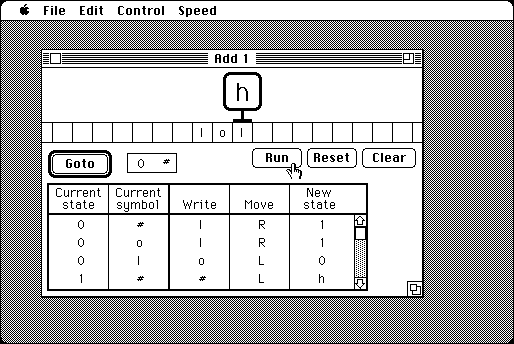

Download
xTuringMachine.zip (41K) xTuringMachine 1.3 repackaged into a zipped hfs disk image and checksum file. The disk image can be mounted with Mini vMac.
xTuringMachine.hqx (53K) xTuringMachine 1.3 in the original format.
copyright: David J. Eck
mod date: July 7, 1995
license: free for non-commercial use
official url :
Downloading TMCM Support Materials
Animated Turing Machine simulation. Written to accompany computer science textbook.

If you find these downloads useful, please consider helping the Gryphel Project, which hosts them.
Here are the md5 checksums for the downloads, signed with Gryphel Key 5:
--------- GRY SIGNED TEXT --------- a0e6c1a4a678c1d3fb7d7f01ca14aeb3 xTuringMachine.zip 33ccada949881e3b37703d885e21f195 xTuringMachine.hqx ------- BEGIN GRY SIGNATURE ------- Gry/4Xa8CFcUzxdN/Mm6lMU/WM1r/68t3thJZg8QvUkkrF3tTQlpuvZKQQGOd9ue 4t7HJOt8wpKn3GVZ8diC/4k1h35bTXDwKX5TBzZrDTeisNkW45r9NiMjnr4tTSXB hSgMdLCIK0E0nkGFGihupMiG/1VHKAyyMbHrY1UY+gF0IWWICz+1eeL++6WL+J9I -------- END GRY SIGNATURE --------